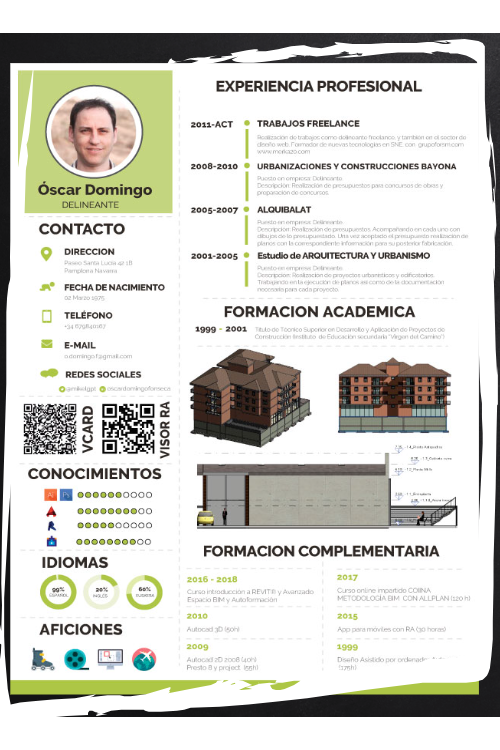
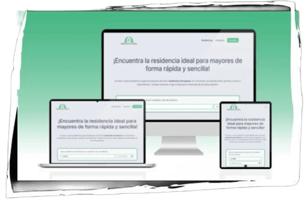
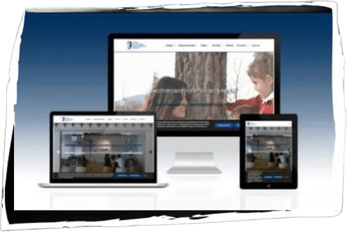
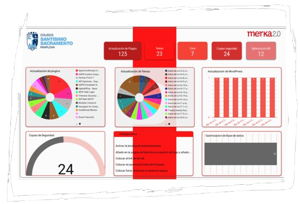

Propuesta de colaboración externa con agencias
ESTA ES MI HISTORIA

Mi nombre es Óscar
Diseñador Web Freelance
📧 oscar@merka20.com | 🌐 merka20.com/proyectos
Sobre mí
Soy diseñador web y desde 2011 formo parte de Merka 2.0, un proyecto que cofundé junto a otros colaboradores con el objetivo de ofrecer soluciones digitales a medida para pymes o micropymes.
Qué hacemos en Merka 2.0
En Merka 2.0 nos especializamos en diseño web profesional y marketing online. Ayudamos a empresas y emprendedores a construir su presencia digital, combinando creatividad, funcionalidad y estrategia.
Ofrecemos servicios como:
-
Diseño y desarrollo web
Diseño personalizado, desarrollo en WordPress y experiencia de usuario.
💻 -
Social Media y contenidos
Diseño de publicaciones, gestión de redes y campañas de publicidad digital.
📱 -
Mantenimiento web
Actualizaciones, seguridad, soporte técnico y mejoras continuas.
🛠️
Buscador de servicios

🛠️ Tecnología: Web realizada en WordPress con un tema de bloques y gutenberg.
⚠️ Reto: El cliente necesitaba integrar una zona en la web con contenido personalizado y acceso a cambios en el Front.
✅ Solución: Se implementó un plugin de la suite de crocoblock compatible con estas funciones de WordPress, solventando de esta forma la introdución de datos por un usuario acreditado y solo de la parte accesible por el usuario.
Colegio Santísimo sacramento

🛠️ Tecnología: Web realizada en WordPress con un tema de bloques y gutenberg.
⚠️ Reto: El cliente necesitaba integrar una zona de trabajos extra, página de docentes y un calendario del curso.
✅ Solución: Se realizaron varios plugins personalizados para poder tener esas funcionalidades, en el primero se creo un CPT de trabajos y se realizaron las plantillas correspondientes para su visualización. El otro nos permitio crear una zona de ajustes en el back para añadir fechas y mediante un shortcode añadirla en la página. Y el último nos permitia dar de alta docentes y hacer CRUD de ellos.
Mantenimientos

🛠️ Tecnología: WordPress, UpdraftPlus, WP-CLI, FTP, cPanel, Google Search Console, WP Rocket, Sucuri.
⚠️ Reto: El cliente necesitaba integrar una zona de trabajos extra, página de docentes y un calendario del curso.
✅ Solución: Se realizaron varios plugins personalizados para poder tener esas funcionalidades, en el primero se creo un CPT de trabajos y se realizaron las plantillas correspondientes para su visualización. El otro nos permitio crear una zona de ajustes en el back para añadir fechas y mediante un shortcode añadirla en la página. Y el último nos permitia dar de alta docentes y hacer CRUD de ellos.
Herramientas y metodologías utilizadas en Merka 2.0
🤝 Colaboración como freelance con agencias
1
Briefing claro: Trabajo a partir de un documento detallado con objetivos, tiempos y necesidades.
2
Comunicación fluida: Uso canales como Slack, WhatsApp o correo. Reportes claros y frecuentes.
3
Integración flexible: Me adapto a equipos internos, herramientas y metodologías (Trello, Asana...).
4
Entrega por fases: Presento avances en puntos clave: diseño, desarrollo, testeo, entrega final.
5
Enfoque en resultados: Trabajo orientado a cumplir KPIs de la agencia: velocidad, SEO, conversión.
💡 Me intereso
- Por los videojuegos.
- Por las impresoras en 3D.
- RA o RV.
- Raspberry Pi.
- Arduino.
- La programación.
- Infografías.
- Revit y SketchUp.
- Automatizaciones.
- IA
Gracias por tu tiempo
Estoy abierto a colaborar en proyectos puntuales o como apoyo continuo.
📧 oscar@merka20.com
🌐 merka20.com/proyectos
📱 +34 679 840 167